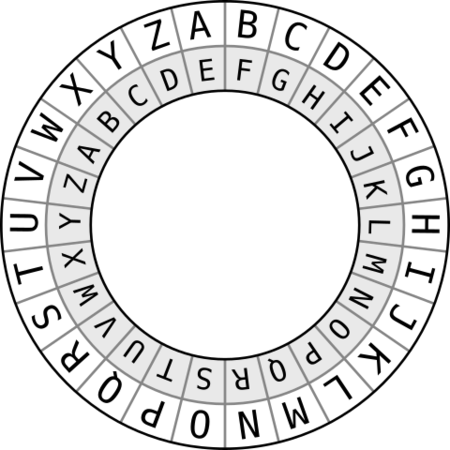

Hello all, and welcome to my first post! They say that first impressions matter, so I wanted to introduce this blog talking about a topic which is an important building block to understanding more about a subject that I love, cyber security, whilst giving you a glimpse on how my mind works, and how I like to go about learning about different topics related to any subject.
So, I want to start this by saying that I value 'understanding/comprehending' something more than I value 'just knowing' something. Here, I refer to the term 'to know' as to have a fact in mind and be able to utilize it to derive other facts or to obtain further knowledge, which, by the way, is not at all a bad thing. However, I feel that knowledge by itself fades and can be easily forgotten, and it is the understanding of a group of facts and how they relate that will allow retention of knowledge and better use of it. In simple words, what I want to say is: don't memorize the formula and know all of the situations that you are able to apply it too. Understand the concepts behind what builds up the formula, and then, even if you do forget what the formula is, or when you are supposed to use it, your understanding of the basic concepts can quickly help you find your way back to a piece of knowledge you may have forgotten. That is my point of view, anyway. I'm not here to preach or tell you that your method of learning is wrong. However, bear with me, because all of this monolog has a point.
So after this loooong introduction, let's get to the technical stuff and how that relates to what I've said until now. Sooo, symmetrical cryptography and symmetrical keys. Every website or book that I read defines symmetric cryptography or symmetric encryption using the same idea: it's the type of encryption in which the same key is used to both encrypt the original message and decrypt the cipher that was obtained after the encryption operation took place. Simply put, I disagree with that definition. Once again, I feel like I must remind the reader that I am not here to tell you what's right and wrong in the world of cyber security definitions, nor am I here to pick a fight with renowned authors in the field. So don't come at me. Do what your heart tells you to do. But, if you are interested in reading more about why I disagree with this definition and what is the definition my heart tells me to believe in, do stick around.
I disagree with the 'same keys' definition for symmetric cryptography first and foremost because I had a pretty crazy but pretty good teacher in college who taught me to think this way, but also because, after I understood cryptography and the reason behind his nagging (he told us he would ask us the definition for symmetric key cryptography in our exams and if we gave the 'same key' answer we would get a fat round 0 for a grade), I started to interpret this definition as the easy way out to understanding how cryptography works in general. So...am I being kind of patronizing? Maybe. I apologize in advance. But I feel that this definition is the equivalent to stating that 'this is a fruit, because all fruits are red', because you have never seen an orange fruit, or a fruit with any other color, for that matter. If you live in a world where all fruits are red, sure, this definition works, but the question here is: are you actually trying to understand what a fruit is, how it actually biologically is formed, or are you just considering a superficial fact that seems to be common among all fruit as a base to understand all other concepts that involve fruits in general? When you move to a planet where all fruits are yellow, all you worked so hard to learn up to that point crumbles. What we should be trying to understand is: if all fruits are red, why is that so? What property allows this to happen? Is this the only thing they have in common? You know...SCIENCE!
Ok, so, before we consider the definition I like best to describe symmetric encryption, let us go back to basics and 'verify' the 'same key' definition for the simplest symmetric encryption algorithm I can think of, which is the Caesar cipher. So, I imagine that if you are reading this you have basic cyber security knowledge, or at least it's a subject that interests you enough for you to know a little bit about it. Right? HOWEVER, just in case you don't remember, let me refresh you memory on how the Caesar cipher works. So, let's assume you have a message m that you want to share with a friend, but this friend is the only one allowed to read it. You want to keep the message confidential between the two of you (just flexing and throwing out there an important cyber security concept). To be able to do that with symmetric encryption, you and your friend must agree on the secret k that will be used to encrypt the message you are sharing, so that your friend will be able to decrypt the cipher text c, once she gets it. Your friend also needs to know the algorithm that you used to encrypt your message, because she will use the same algorithm to decrypt it, and, just to be clear, by algorithm I mean the set of ordered operations you used to transform m into c. For the Caesar cipher, this algorithm is simple. Your key is a letter on the alphabet. To obtain a cipher text from the message, you will rotate each letter in said message a number of positions equal to the position the key itself belongs to in your alphabet. So, for ease of understanding this mess of a sentence I just wrote, let's consider an example, shall we?
Our message m is the word mossoctopus, our key k is the letter d and our alphabet is the regular english language alphabet (abcdefghijklmnopqrstuvwxyz). So, first things first, we have to find out what is the position of our key in relation to the alphabet. The letter d is the fourth letter in the alphabet, meaning that our key k in integer form is equal to the number 4 (notice that our choice of alphabet limits our amount of possible keys to 26, since we have 26 letters to choose from. So...pretty easy to crack the key using the old brute force method, a.k.a, test all possibilities if you have the time and patience for it, which a computer will have). This means that, for each letter in m, we must rotate them 4 positions, or, in other words, add 4 to the position they are currently in. Therefore, the first letter in the message, which is also m(13), becomes... m(13) + 1 = n(14), m + 2 = o, m + 3 = p, m + 4 = q. Yay! One letter encryted, 10 to go. But this time, i'll do it without the step-by-step and just show the result below.
m o s s o c t o p u s
🠓 🠓 🠓 🠓 🠓 🠓 🠓 🠓 🠓 🠓 🠓
q s w w s g x s t y w
So what we did up there was simple. To get our cipher text, we rotated the position of all letters in our message by four. And just to be 100% clear, we call it 'rotate' and not just 'jump' or 'move to', because, if we had the letter z in our message and we consider the same key, since z is the last letter in our alphabet, to encrypt it, we go back to the start, as if z were the 26th item in a 26-number clock, and when we count 4 from the last item in the clock, we start the count from the beginning, going back to 4, which is d. I'm going to include in this post an image of a Caesar cipher wheel (not sure if that is the correct name, but I'll call it that for now), which will make this idea clearer (and by sheer luck , there is one that considers the same key we are using in this example).

The wheel represented in the image in the right is set to encrypt a message considering the key d=4. The outer wheel represents your clear text or, in other words, your message, while the inner wheel can be adjusted so that you can obtain the cipher text. So, when you align the inner wheel's a, to the outer wheel's a, you have no encryption. By rotating the inner wheel 4 positions to the left, you are considering d, the 4th letter on the alphabet as being your key, since now, your first letter a in the outer wheel will be aligned to e in the inner wheel and a + 4 = 5, which is e's position in our alphanet. Simple enough, right?
Alright, so now, you send your friend a message containing the following text qswwsgxstyw (for some reason, you really wanted your friend to know about mossoctopus, the author of this blog), which is an encrypted message. You friend already knows the key you used to encrypt the message, and he/she knows you used the Caesar cipher to do it. Other people who you don't want reading the message, may know that you guys are using this cipher specifically, but, in theory, since they don't have the key, they can't know what the real message is (I say in theory, because if someone really wants to know the message, they'll try to find out what the key is or they'll try to extract the message from the cipher text in some way, as all hackers do. The use of the expression is simply to point out that knowledge of the inner workings of a cryptographic algorithm by a third party that is not authorized to read the clear text message should not be considered a problem if you have a well designed algorithm and a strong enough key to back it up. In other words, hiding what the algorithm is from people you don't want reading your message is an existing and used technique, but shouldn't be necessary if you have a good algorithm and a good key. If your algorithm is well structured, knowledge of how it works will not make it any easier to obtain a clear text message from a cipher text, the knowledge of what the key is being the only thing that will allow efficient decryption. So...if you're hiding your encryption algorithm, it makes me think that it's going to be pretty easy to crack. You know...security by obscurity because you are afraid...kinda? But this maybe is a subject for another post. Having a strong algorithm is not the case for the Caesar cipher, I know, but this is just an example. A Caesar ciphered text can be easily cracked by statiscal analysis, and, in our example, by the use of brute force techniques... so maybe you and your friend should hide the algorithm you are using from others. But let me already be the bearer of bad news and tell you it's pretty easy to know if someone is using the Caesar cipher by analysing the cipher text. Moral of the story: don't use the Caesar cipher for important stuff. Only for blog examples. Ok...back to the blog post after this ginormous parenthesis). Your friend receives a note with qswwsgxstyw in it, and all she does is rotate 4 to the right using a new wheel (where the inner and outer a's where aligned), positioning the inner wheel's a below the key d in the outer wheel. Why? Because ds in the cipher text were originally as, and, during decryption, the outer wheel will represent the cipher text and the inner wheel will represent what that text was before encryption. Each letter in the cipher text should be converted to the letter in the inner wheel which is at the same position of the letter in the outer wheel equal to the one being considered in the cipher text, so that the original message can be obtained). If we consider a mathematical operation, instead of adding 4 to the position of each letter, she instead decreases 4. Once again, we need to consider special cases, such as when we have the letter a in our cipher text. How are we going to decrease 4 from a's position, which is 1? Fear not, there is a solution: all we need to do is consider that to get to 1 we must have completed a lap in our clock during encryption, meaning that a - 1 = 26, a - 2 = 25, a - 3 = 24 and a - 4 = 23. But wait a second...this looks familiar to me. This is the operation modulo in mathematics!!!! Wow, amazing. Keep that in mind because I am going to get into that in just a second. But for now, let's just celebrate the fact that your friend was able to decrypt your secret message by using the same key you used to encrypt your message: d = 4. Mission accomplished.
Our example above shows us in a very basic way why symmetric encryption is considered the type of encryption where the same key is used to encrypt and decrypt a message. If you don't know much about cyber security or have simply not studied this subject yet, you may be wondering 'Is it even possible to do this by using different keys?'. That was certainly what I wondered when I first started studying this. Seems pretty impossible right? Using different keys to encode a message and then decode it? Counter intuitive to say the least, since all of the other things we study, seem to follow the symmetric pattern. Take equations for instance: if you divide by 4, all you need to do to go back to the previous result is multiply by 4. Any other operation will yield an incorrect result. So, what a regular person would tell you is: 'yes, it is possible, that's why assymetric key encryption exists! Just trust me, it works because the keys are different, but mathematically linked.' What I tell you instead is, yes, it is possible, and it can happen in symmetric cryptography, and, shockingly, in the example I have just presented to you, should we look at it in a different light.
So, to explain our 'different keys' situation in a symmetric encryption algorithm (blashphemy!), I first need to explain how the modulo operation works, for those that might not know. I won't be too detailed, and maybe I can make a more descriptive blog post on this subject in the future, but for now, if you don't understand my explanation, I suggest looking for one someplace else in our vast Internet, because understanding it will be important to understand the rest of what I am going to say regarding our encryption algorithm moving forward.
What is the modulo operation? In non-mathematical terms, the modulo operation is an operation that considers results that are in the range 0 to i - 1, where i is a positive integer of your choice. Let's choose a value for i, say 5. This means that x modulo 5, where x is an integer (yes, the second operand is always i, and in our example i = 5), will have 1 of 5 possible results: 0, 1, 2, 3 or 4. Why, you ask? Because the result of the modulo operation will always be the remainder you obtain when dividing x by 5. So, from 0 to 4, notice that our remainders are the numbers 0, 1, 2, 3 and 4. When we reach the number 5, 5 / 5 = 1 with a remainder of 0, which means, 5 modulo 5 = 0. For 6, the result of our modulo operation will be 1, for 7 this value will be 2, until we reach 10, which is divisible by 5, and, therefore, we go back to our remainder of 0. This goes on forever. If you get a remainder value bigger than or equal to 5 in the modulo operation, it means you divided incorrectly. It's like considering a clock with 5 numbers, in which one of them is 0. This applies to any value you choose to give to i, meaning, a clock with i numbers, that range from 0 to i - 1.
Ok, now that we have that explanation out of the way, we can go back to our Caesar cipher algorithm and how to decrypt it using a different key than the one used to encrypt it. When we are rotating our clear text message on the Caesar cipher we are performing a modulo operation in which i = 26, since our alphabet has 26 letters. Considering the wheel, we are able to position it 26 different ways, which range from 0 to 25 possible rotations that can be performed in the inner wheel, these rotations represented by letters a to z, numbers 1 to 26. It is very important that I emphasize that key a = 1 rotation is not our neutral key, also known as adding 0 to the current position. Our neutral key/first key is z = 26 which is equal to 0 modulo 26. However, DO NOTE that the key being z does NOT mean putting the inner wheel's z in the a position for the outer wheel during encryption. It is only a simpler way to remember that you must rotate 26 times, because 26 is the position of the letter z in the alphabet. By rotating the wheel 26 times, a in the inner wheel will be under a in the outer wheel. The same happens when you rotate 0 times. The same happens when you perform the operation a + 26 = 27 because 27 modulo 26 = 1 = a exactly because a + 26 = 27 = 1 = a + 0 in the modulo world. With this difference clarified, we can finally see that, that is why, when we apply our key d = 4 to the letter z, we end up with d. Shall we do the math? z = 26 + 4 = 30 and 30 modulo 26 = 4 = d. Boom, mindblown. In written words, what is happening here is: I am using the modulo operation because I don't want values over 25 for my rotations (or, I don't want more than 26 possible values for my keys, as there are 26 numbers between 0 and 25 and between 1 and 26, remembering that in the modulo world, 1 to 26 is actually 0 to 25, as 26 = 0). Ergo, whenever we reach 26, go back to the beginning (of the alphabet), and start counting from 0 all over again. Yay! Math is fun. It's even more fun when you come to the realization that you can go back to 1, 2, or whichever number you like without ever needing to perform a subtraction. You can subtract by adding a large enough number, completing a loop and starting to count from 0 all over again. Having that in mind, let's go back to your friend trying to decrypt your message. Let's consider he/she lives in an alternate universe where substracting is a crime, and he/she can only sum numbers. This means, he/she cannot use your encryption key do decrypt the message you sent him/her! He/She can't subtract 4 because he/she will go do jail for life if he/she does so (harsh world...)! Well, is it all over? Will your message about this awesome author of this awesome blog never come across? No, because your friend knows the modulo operation (which is not forbidden in his/her very weird planet/alternate reality). So, let's get into the mind of your friend: to get to the cipher text c, you performed a sum of x over the position each letter in the original message has in the alphabet. This is a symmetric algorithm, which means, your friend still needs to know the encryption key to be able to decrypt the message. Not because the key is the same for decryption, but because this new decryption key can be easily calculated from the encryption key. In our example, very easily calculated. Our alphabet has 26 letters. We know the key is d = 4. When the message is in it's original state, not encrypted, it is as if we had encrypted it with the key of value 0 (no rotations), which, in the modulo world, remember, will also equal to 26 (rotations. This means the key here is z here since a = 1 rotations), because 26 modulo 26 = 0. So...I want to get to position 0 from position 4 without having to subtract 4. Solution: y + 4 = 0 = 26. Who is y?. Drumroll....you are incorrect if you answered anything but y = 22. And now, all your friend needs to do is sum the position of all letters in the cipher text to 22 and voilá. He/She will reach the original message. Shall we put it to the test?
q = 17 + 22 = 39 39 modulo 26 = 13 = m
s = 19 + 22 = 41 41 modulo 26 = 15 = o
w = 23 + 22 = 45 45 modulo 26 = 19 = s
w = 23 + 22 = 45 45 modulo 26 = 19 = s
s = 19 + 22 = 41 41 modulo 26 = 15 = o
g = 07 + 22 = 29 29 modulo 26 = 03 = c
x = 24 + 22 = 46 46 modulo 26 = 20 = t
s = 19 + 22 = 41 41 modulo 26 = 15 = o
t = 20 + 22 = 42 42 modulo 26 = 16 = p
y = 25 + 22 = 47 47 modulo 26 = 21 = u
w = 23 + 22 = 45 45 modulo 26 = 19 = s
Well, would you look at that...call me impressed. But not really, because I knew that was going to happen. But the point here is, we were able to decrypt the cipher text by using the decryption key 22 instead of 4, which was also the encryption key. Does it mean that now we have broken all of the laws of computer sciene, physics and the universe, and this algorithm, that since the dawn of time is considered a basic example of what is a symmetric key encryption algorithm, is now assymetric because we use different keys? Sorry to disappoint you, but if you look outside your window, nothing will be different, and the universe is not collapsing due to this. I can also assure you this algorithm is still a symmetric encryption algorithm. What is incorrect in this whole story is our definition that states that symmetric encryption algorithms use the same key to encrypt a clear text message and to decrypt the cipher text obtained from it. If we change our definition, the universe can survive and you can live another day to maybe encrypt some more interesting messages to send to your friend (such as this blog post, *wink*wink*). But, before we do that, let us wrap up our Caesar cipher tale: by using the modulo operation and knowing the encryption key and the size of the alphabet, we can easily and quickly deduce what is the decryption key in order to avoid using a subtraction operation to obtain the original message from the cipher text. All you need to do is subtract from the size of your alphabet the size of your key, in our example, 26 - 4 = 22. Ooops. I broke a rule. Your friend lives in a planet where he/she can't subtract...so I have inevitably sent them to intergalactic jail anyways to figure out the key. Good thing this is only an example, right? So, the whole 'you can't subtract thing' was only a way to show a situation where you might need to look for a different solution to your problem. If we bring this whole scenario to the real world, I can't talk about a computer that can add but can't subtract (I don't think that exists), or a situation where subtracting costs more (time or money or even both) than adding, because it will not make sense. I mean...a subtraction is the addition of a negative number. The final question is, then, what is the advantage of using the second method to decrypt our Caesar cipher encrypted message? I will show you why, with some Python code.
# SOLUTION ONE: USING THE SAME KEY AND SUBTRACTION
def decrypt(text, key):
result = ""
for i in range(len(text)): # for each character in the cipher text...
char = text[i]
alphabet_position = ord(char) - 96 # lower case a is equal to 97. Converting the lowercase letter to alphabet position
decrypted_char = (alphabet_position - key)
if decrypted_char < 1: # in we come across a negative value due to a complete rotation during encryption
decrypted_char = decrypted_char + 26 # e.g., 'a' as cipher text when key=d=4. Decryption should result in 23=w, not -3.
decrypted_char += 96 # converting back to ASCII char value
result+= chr(decrypted_char) # creating plain text string for each decrypted char
return result
txt = input("Cipher text: ")
k = int(input("Key (as an integer from 1 to 26): "))
print (decrypt(txt,k))
# This code is not the best code out there, not considering all possible user input and not being the most efficient it could be. It is used here, however to present
to the reader a quick example of what a decryption program for the Ceasar cipher, though very rough around the edges, could look like.
# SOLUTION 2: USING DIFFERENT KEYS AND THE MODULO OPERATION
def decrypt(text, key):
result = ""
decrypt_key = 26 - key;
for i in range(len(text)): # for each character in the cipher text...
char = text[i]
alphabet_position = ord(char) - 96 # lower case a is equal to 97. Converting the lowercase letter to alphabet position
decrypted_char = (alphabet_position + decrypt_key) % 26 # % is the modulo operation in Python
decrypted_char += 96 # converting back to ASCII char value
result+= chr(decrypted_char) # creating plain text string for each decrypted char
return result
txt = input("Cipher text: ")
k = int(input("Key (as an integer from 1 to 26): "))
print (decrypt(txt,k))
# This code is not the best code out there, not considering all possible user input and not being the most efficient it could be. It is used here, however to present
to the reader a quick example of what a decryption program for the Ceasar cipher, albeit very rough around the edges, could look like.
Yes, I know. Not too much of a difference. The first code has a single additional line, and processing time will not be all that different. But remember, dearest reader, we are considering a simple algorithm and a simple example. Imagine a complex symmetric encryption algorithm where you spend hours processing data and spend thousands due to energy consumption because your code has more jumps or loops than it should ever require to work properly...just because you need your encryption and decryption keys to be the same. Seems like a waste of mathematics and all of its power to me. So, yes, you can say that for the Caesar cipher the keys are the same, and that I am in a useless quest to prove something that does not need to be proven, discussing what needs not to be discussed exactly because all symmetric encryption algorithms that exist to date (take this with a grain of salt, I certainly do not know how all symmetric encryption algorithms work to be sure that this applies to all of them, but I do know it applies to a big part of the algorithms known and used today) use the same keys for encryption and decryption. And all I can say is...agree to disagree. Because if you are reading this post in its entirety, you will remember my example of the red-fruits-only world. What if one day, some amazing cientist discovers a yellow fruit in this ficticious planet? If people in the planet are stubborn and decide to stick to their definition that fruits must be red, I can see them loosing on a lot. Misunderstanding a lot. I mean, the best fruit smoothie could be yellow fruit smoothie, but they'll never know, because they only try recipes that treat it as something else. When we talk about encryption algorithms, consequences can be and will be a lot worse than just missing out on a drink. I mentioned this is a previous paragraph: if someone creates an encryption algorithm that uses different keys, does it automatically make the algorithm assymetric? That is what the current definition tells me. Using this as a reference, I apply this supposedly assymetric algorithm to allow people to send me encrypted data that only I can decrypt with my private and secret decryption key (because, for those that do not know, that is how assymetric encryption works: there is a public key, that can be known by all and is used for encryption only, and there is a private key, that must be kept secret and is used for decryption only), such as their login information when they want to connect to their accounts in the social media platform I control. A hacker decided to snoop, steals some cipher texts and after taking a look at the algorithm, he realizes even though the keys are different, the algorithm is symmetric. He quickly and easily discovers the decryption key from the publicly provided encryption key and gets illegitimate access to various accounts. You can say the problem here is the hacker...but this is basically all your fault, because you decided to use a ridiculous algorithm like the Caesar cipher to encrypt your clients' data just because 4 is different from 22.
That's why I am thankful for my college teacher for not giving us the simple definition...the easy way out to quickly learn (to just know) what symmetric cryptography is. The definition that describes all currently known symmetric encryption algorithms (or at least the ones I know and read about), but doesn't actually explain anything about them. The definition he gaves us was a definition that took me a while to understand, and I had to research and try out examples and experience the decryption process for myself (as shown in the above example) to finally grasp the true meaning behind it. But now, I understand it, and I understand a lot of the things that relate to this subject. So, without further ado, I give you this definition: "A symmetric encryption algorithm is an algorithm where not much work/effort is needed to obtain a decryption key from an encryption key. Through simple operations you can quickly obtain one should you have the other (where sometimes 'quick' may not be quick for a human being, but it is for an efficient computer)". The same cannot be said for assymetrical encryption algorithms, where it is very hard and sometimes unfeasible in our current lifetime with our current technology, even for extremely fast and efficient computers (including the insane ones we see in movies), to derive a decryption key from the public encryption key. That is why the latter can be made, as the name states, public. Brute force is not a viable option, neither is trying to figure out the decryption key through some type of statistical or any type of scientific analysis. What makes this definition and this understanding I have of symmetric encryption algorithms all the more interesting to me, is the fact that it shows how easily the whole base for cryptography used in current systems can very quickly come crumbling down. That is because, the day someone discovers a mathematical formula/algorithm that allows us to easily factor a very large non-prime number, for example, a very well established assymetric encryption algorithm becomes symmetrical just like that. And then all the public keys we have out there become available to many that will definitely and now feasibly figure out the private and secret key associated with it. One understanding that leads to another and that shows me that trust in a strong assymetrical encryption algorithm can never be complete. I also of course know that finding an easy way to factor numbers composed of huge prime numbers is no easy task. It is very very hard actually. However, the key idea here is: improbable, not impossible. Which is my approach to cyber security in general: never assume that you have enough to protect your network...there is always someone out there willing to try to make the improbable happen.
Finally, we have reached the end of the post and I hope you enjoyed reading this. The moment I saw how important this definition given to me from my professor in college was, was the moment I started to question a lot of the information I was given and when I started to dig deeper to try to truly understand something that I want to learn more about. I encourage you to always do the same and seek beyond the basic definition, obtaining knowledge and understanding with the help of others (studies made after a lot of hard work), but adding to this information, these results and this knowledge, the understanding you yourself were able obtain after making your own studies and exploring science! With that said, you can choose to agree with what I have written in this blog post or you can choose to disagree with it and reject my definition, considering the more widely accepted definition or finding a definition you think is more appropriate to describe what a symmetric encryption algorithm is, of course, always considering the science and the logic behind it!